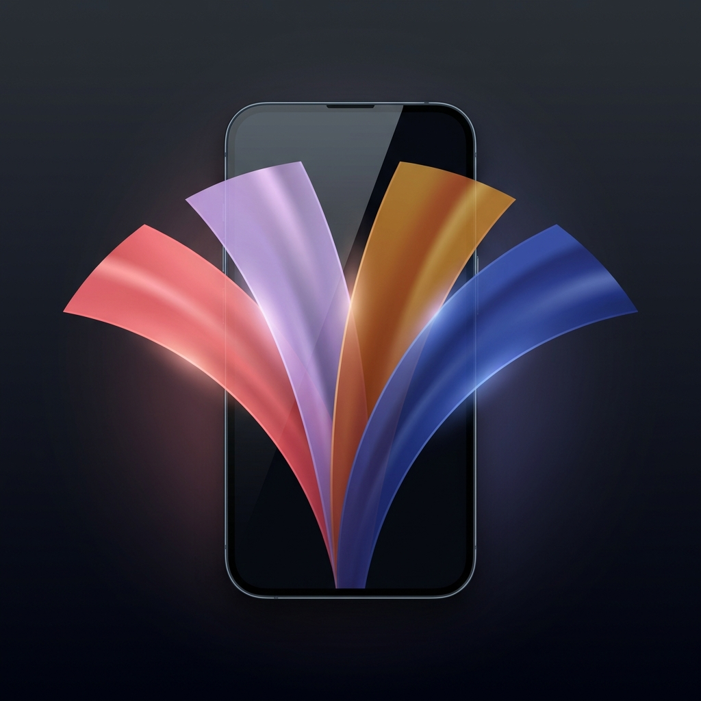

お店のオレンジ色の照明の下では、服やコスメの本当の色を肉眼で正しく判断するのは至難の業です。ColorOverlay は、iPhoneの画面そのものを高輝度・広色域（Display P3）の「正確なカラーシート」に変えるアプリ。服やコスメを画面に直接乗せれば、店舗の照明に邪魔されず、実物の本当の色をそのまま確認できます。さらに、色を顔にかざせばパーソナルカラー（イエベ・ブルベ）の似合う色さがしにも。完全オフライン・登録不要で動作します。
ご質問・ご要望・不具合報告は、お問い合わせフォームよりお寄せください。
Under a store's warm orange lighting, it's nearly impossible to judge the true color of clothes and cosmetics. ColorOverlay turns your iPhone screen itself into an accurate, wide-gamut (Display P3) color sheet. Lay an item directly on the screen and it blocks ambient-light noise, so you see the real color of the actual product. You can also find your own colors (personal color / warm vs. cool) by holding a color up to your face. Fully offline, no sign-in.
See true colors free of store lighting · A/B compare two colors instantly · Find your colors (warm/cool) · Fully offline, no account, no ads.
Free: 2 seasons, up to 30s emission, preset A/B compare. ColorOverlay Pro (one-time): all four seasons + custom HEX, unlimited emission, up to 20 favorites, free 2-color A/B compare.
The app collects no personal data and works fully offline. See the Privacy Policy.